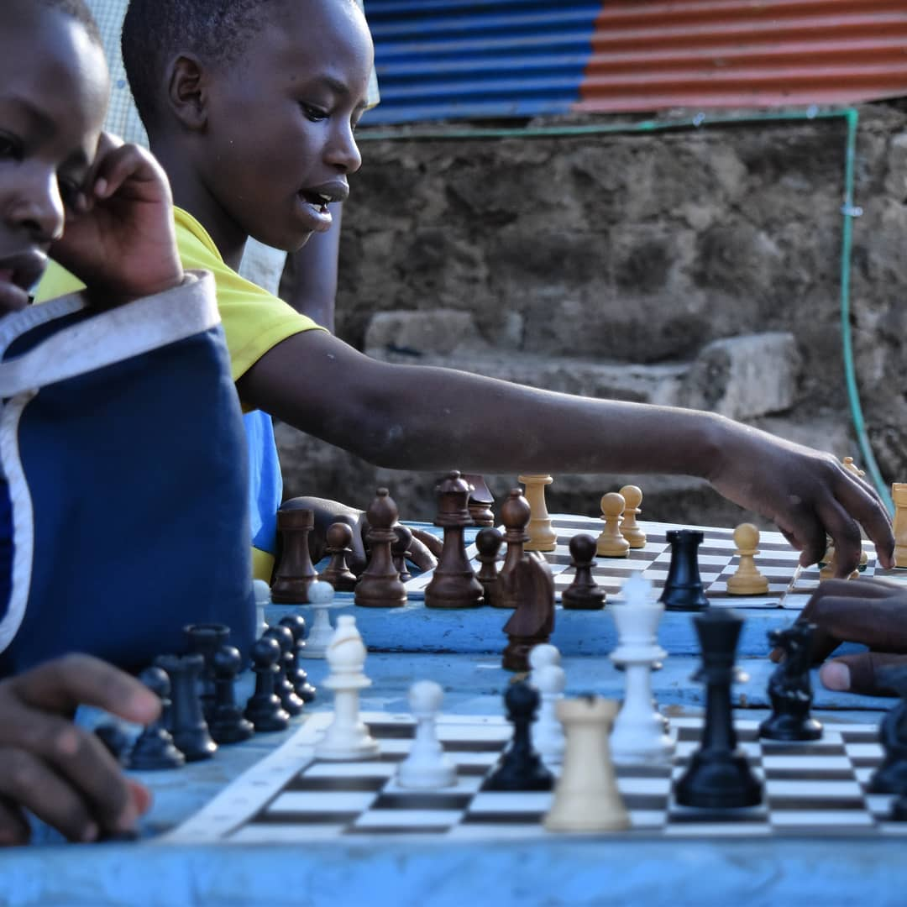
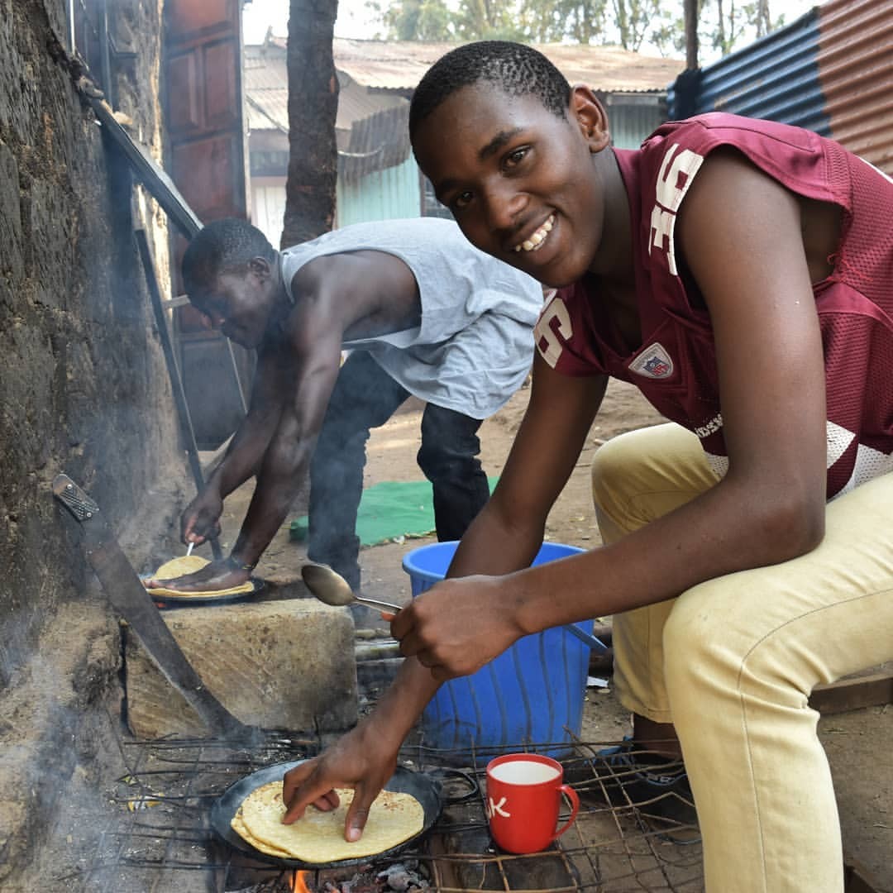
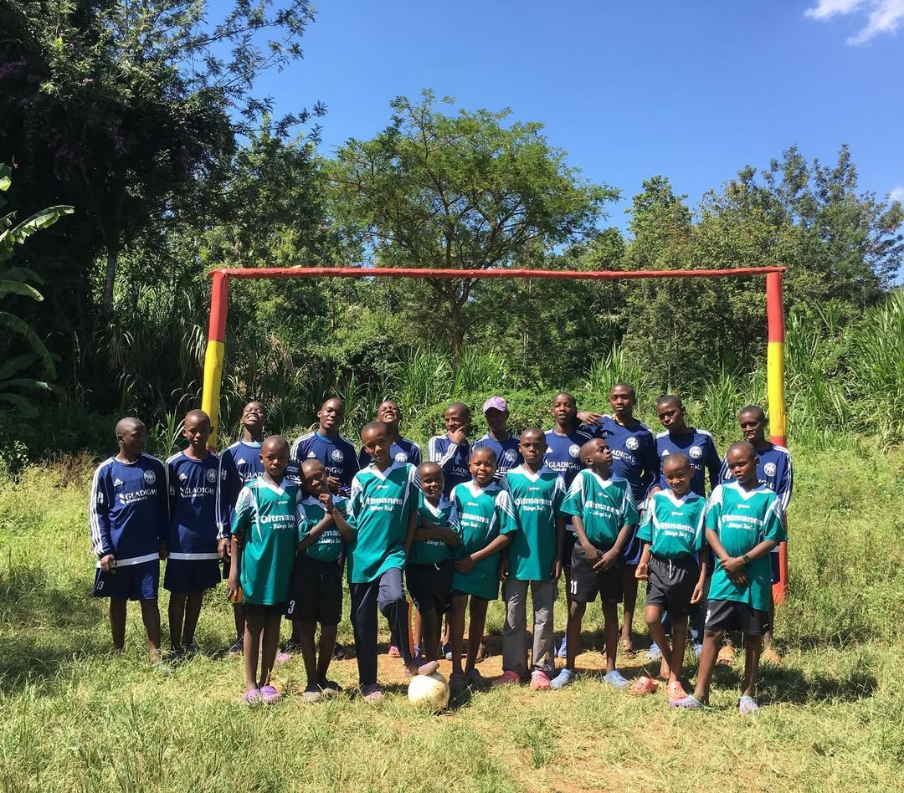
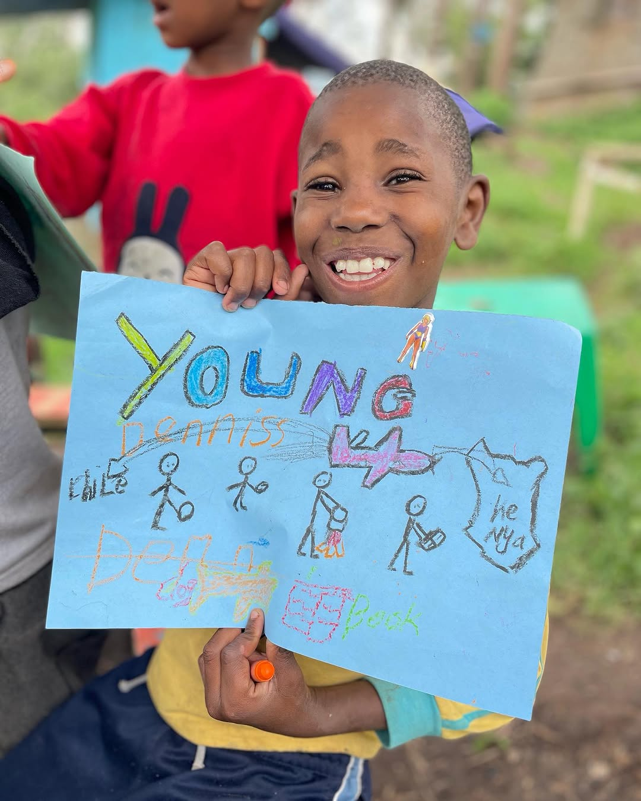

We are support our childrens hobbies and talents because we care.
Supporting the game of chess in children's homes is a powerful way to nurture young minds and foster essential life skills. Chess is more than just a game—it is a tool that cultivates critical thinking, problem-solving, and strategic planning. By introducing chess to children in care, we provide them with a mentally stimulating activity that challenges them to think ahead, make decisions, and consider the consequences of their actions. These skills not only enhance their academic performance but also build confidence, patience, and resilience. Encouraging chess in children's homes empowers them to develop intellectually while also offering a positive, structured pastime that can inspire discipline and ambition.
By introducing chess to children in care, we provide them with a mentally stimulating activity that challenges them to think ahead, make decisions, and consider the consequences of their actions. These skills not only enhance their academic performance but also build confidence, patience, and resilience. Encouraging chess in children's homes empowers them to develop intellectually while also offering a positive, structured pastime that can inspire discipline and ambition


Supporting cooking programs in children's homes is a meaningful way to equip young individuals with valuable life skills while also encouraging creativity and independence. Cooking is not only a practical necessity but also an engaging activity that promotes critical thinking, problem-solving, and time management. By involving children in meal preparation, they learn to follow instructions, measure ingredients, and make thoughtful choices—all of which strengthen their decision-making abilities. Cooking also fosters a sense of responsibility and accomplishment, helping to build self-esteem and resilience. Introducing this skill in children's homes creates a nurturing environment where children can express themselves, develop healthy habits, and gain confidence in their abilities to care for themselves and others.
Supporting football in children's homes is an excellent way to promote physical health, teamwork, and mental resilience among young individuals. Football is more than just a sport—it is a dynamic activity that helps children develop critical thinking, strategic planning, and quick decision-making skills on the field. Through regular play, they learn the importance of discipline, communication, and collaboration, which are essential both in sports and in life. Football also offers an outlet for emotional expression, builds self-confidence, and fosters a strong sense of belonging and community. Encouraging the sport in children's homes provides not only a healthy recreational activity but also a platform for growth, character development, and the nurturing of future talent.


Arts and crafts play a vital role in the holistic development of children in our home, offering them a powerful outlet for self-expression, healing, and creativity. Through drawing, painting, beadwork, and other hands-on activities, children are able to process emotions, build confidence, and discover their unique talents. These artistic experiences not only enhance fine motor skills and focus but also create a sense of accomplishment and joy. By nurturing their imagination and giving them the freedom to create, we help them develop problem-solving abilities, cultural appreciation, and a positive sense of identity. Arts and crafts also foster a therapeutic, calming environment where every child feels seen, valued, and inspired.